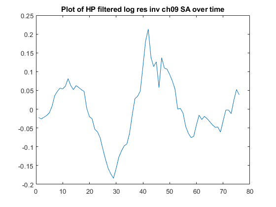

list = ["gdp_ch09_SA", "nondur_ch09_SA", "p_nres_inv_ch09_SA", "res_inv_ch09_SA"];
std_data = zeros(1,4);
full_hp_data = zeros(76,4);
for i = 1:4
str = list(i);
dt = xlsread(strcat("C:\Users\Nmath_000\Documents\MI_school\macro 607\data\", str, ".xlsx"));
dt = log(dt);
row_num = transpose(1:1:length(dt));
dt = [dt row_num];
plot_1 = figure;
plot( dt(:,2), dt(:,1))
title( strcat("Plot of log ",str, " over time"));
hp_data = hp_filter(dt(:,1), 1600);
hp_data = [hp_data row_num];
plot_2 = figure;
plot( hp_data(:,2), hp_data(:,1))
title(strcat("Plot of HP filtered log ",regexprep(str,"_", " "), " over time") );
saveas(plot_1, strcat("C:\Users\Nmath_000\Documents\MATLAB\plots\hw3\hw_3_p1_",str, ".png"))
saveas(plot_2, strcat("C:\Users\Nmath_000\Documents\MATLAB\plots\hw3\hw_3_p2",str, ".png"))
full_hp_data(:, i) = hp_data(length(hp_data)-75:length(hp_data) , 1);
std_data(1,i) = std(hp_data(:,1));
end
"standard deviation of GDP, nondurable C, non_res I, res I"
"all observations are chained 2009"
std_data
for i = 2:4
lag_data = full_hp_data(:,[1 i]);
for t = 1:10
lag_t_b = [NaN(t,1); lag_data(1:76-t, 2)];
lag_data(:, t+2) = lag_t_b;
end
for t = 1:10
lag_t_f = [lag_data(t+1:76, 2); NaN(t,1) ];
lag_data(:, t+12) = lag_t_f;
end
lagged_correlations = corr(lag_data,'Rows','pairwise');
lagged_correlations = lagged_correlations(:, 1);
str = list(i);
strcat("backward corr of GDP with ",str)
lagged_correlations(2:11,1)
strcat("forward corr of GDP with ",str)
lagged_correlations(12:21,1)
end
ans =
"standard deviation of GDP, nondurable C, non_res I, res I"
ans =
"all observations are chained 2009"
std_data =
0.0161 0.0103 0.0502 0.0809
ans =
"backward corr of GDP with nondur_ch09_SA"
ans =
0.8347
0.7859
0.7014
0.5525
0.4000
0.2181
0.0840
-0.0893
-0.2605
-0.3647
ans =
"forward corr of GDP with nondur_ch09_SA"
ans =
-0.4298
0.7347
0.6160
0.4479
0.2564
0.0789
-0.0797
-0.2147
-0.3079
-0.3125
ans =
"backward corr of GDP with p_nres_inv_ch09_SA"
ans =
0.8351
0.6883
0.4673
0.2343
0.0306
-0.1418
-0.2650
-0.3487
-0.3900
-0.4066
ans =
"forward corr of GDP with p_nres_inv_ch09_SA"
ans =
-0.4138
0.8885
0.8413
0.7356
0.5869
0.4015
0.2119
0.0475
-0.1031
-0.2413
ans =
"backward corr of GDP with res_inv_ch09_SA"
ans =
0.6202
0.6804
0.6995
0.6892
0.6748
0.6182
0.5618
0.4856
0.3869
0.2731
ans =
"forward corr of GDP with res_inv_ch09_SA"
ans =
0.1211
0.4969
0.3470
0.1894
0.0568
-0.0657
-0.1878
-0.2973
-0.4152
-0.5130
